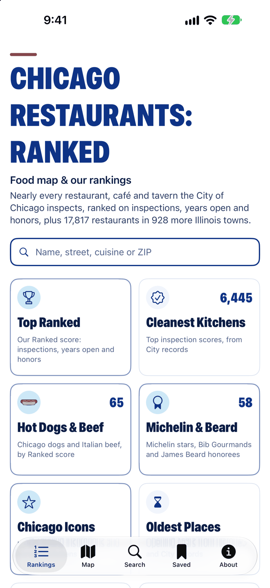
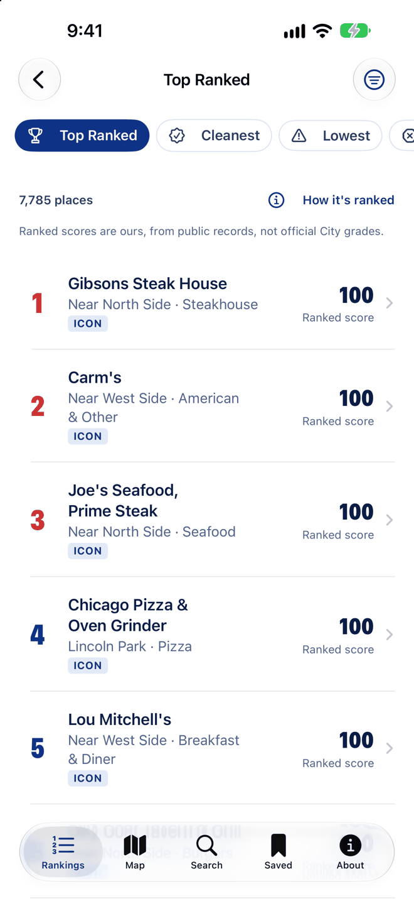
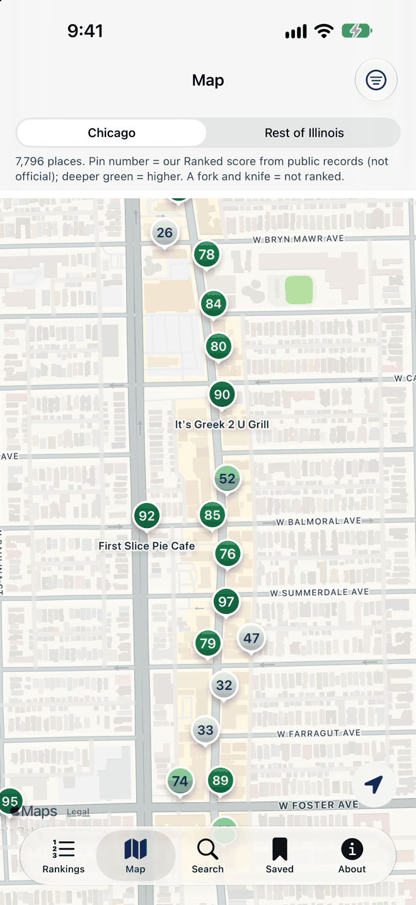
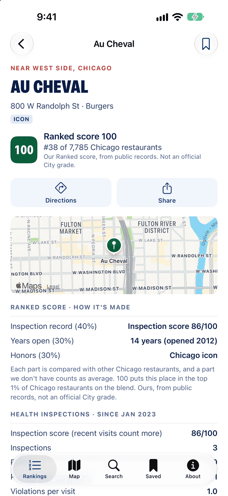
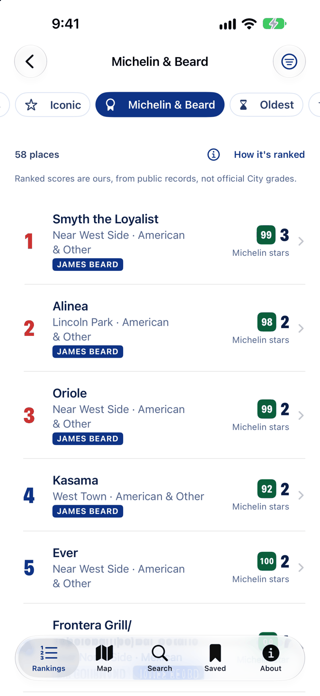
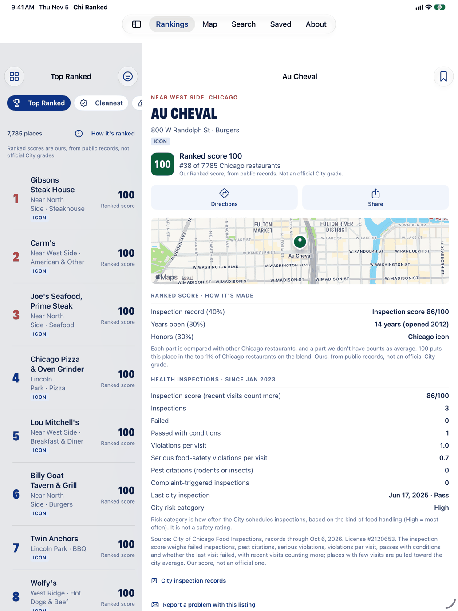

Free for iPhone and iPad
Chicago restaurants, ranked on the public record
Chicago Restaurants: Ranked gives nearly every restaurant in the city a 0–100 Ranked score from public records: its City of Chicago inspections, how long it has been open, and Michelin, James Beard and other hand-checked honors. Browse the top-ranked places, the cleanest kitchens and the city’s icons, on a list or a map, before you pick a place to eat.
The score is ours, calculated the same way for every place from public records. It is not an official City of Chicago grade.
From public records to a Ranked score
- City inspection record, 40%
- Years open at the address, 30%
- Michelin, James Beard and other hand-checked honors, 30%
A 0–100 Ranked score
- Chicago restaurants, out of 8,365 licensed food places
- 7,826
- Data updates from City inspection records, now through November 2, 2026
- Weekly
- More restaurants on the map in 929 other Illinois towns
- 17,985
- No ads, no in-app purchases, no account
- $0
A Chicago restaurant app built on public records
Chicago’s licensed restaurants, ranked on their inspection records, years open and honors, with the context that helps you decide where to eat.
Rankings, top and bottom
Top Ranked by our Ranked score, boards for the cleanest records and the lowest inspection scores, failed latest inspections and pest citations, plus the most iconic spots, Michelin and James Beard honorees, the oldest and newest, the most valuable buildings and the highest published sales.
Filters that match how you eat
Narrow any board by side of the city, neighborhood, cuisine, Ranked score, alcohol or a dining room, and hide chains. Airports, stadiums and cafeterias stay hidden unless you include them.
A map with scores on it
Pins colored and numbered by Ranked score across the city. Tap Near Me on the home screen to see the closest places first; your location is used on your device only.
Search the whole city
Find a place by name, street, neighborhood, cuisine or zip code, or look up a town elsewhere in Illinois.
The whole record on one page
The Ranked score and what went into it, the inspection score and counts, the last visit’s date and result, a link to the City’s official records, licenses (alcohol, patio, late hours, dining room), the opening year or first City record, building value and honors. Directions in Apple Maps, the website, a share button and a way to report a problem with the listing.
Saved places, no account
Save the places you want to try or go back to. The list stays on your device.
How the Ranked score works
Three parts from public records, blended into one 0–100 score.
The City inspects
Chicago Department of Public Health inspectors visit licensed food businesses on a schedule set by risk, and after complaints. Each inspection ends in pass, pass with conditions or fail. How Chicago inspections work.
We add years open and honors
Our inspection score (40%, recent visits counting more) joins how long the place has been open at its address (30%; a chain store’s count half) and hand-checked honors (30%): Michelin stars and Bib Gourmand, James Beard awards and America’s Classics, and long-running Chicago icons.
You get a Ranked score
Each part is compared with other Chicago restaurants, and the blend becomes a 0–100 score: 85 means a place ranks above 85% of them. Inspections still cap it: a failed latest inspection holds a place to 50. How we rank.
- 9090–100top tenth
- 7575–89
- 5050–74
- 2525–49
- 00–24
A low score means less on the public record (a newer place, no honors) as often as a weaker inspection record; the place page shows each part. Inspections alone never rank a place: with no opening year and no honor, it isn’t ranked. The Cleanest and Lowest inspection scores boards only include places with at least two inspections.
What the app looks like
Built for iPhone and iPad, in Chicago blue and red.

Home: every list in one place. 
Rankings: our Ranked score from public records. 
Map: every pin shows its Ranked score. 
Place page: what goes into the score. 
Honors: Michelin and James Beard winners.

Eleven ways to rank Chicago restaurants
Each board covers the whole city, or narrow it to a neighborhood, cuisine or Ranked score.
Top Ranked
- Our Ranked score: inspections, years open and honors
Inspection boards
- Cleanest
- Lowest inspection scores
- Failed latest inspection
- Pest citations
Context boards
- Most iconic
- Michelin & James Beard
- Oldest and newest
- Most valuable building
- Highest published sales
Deciding where to eat in Chicago? On the web: the top-ranked places, Chicago Icons, Michelin and James Beard honorees, the oldest places and newest openings, hot dog and Italian beef places, all the rankings, and our rankings by neighborhood or by cuisine.
Price
Free
No ads, no in-app purchases, no account. Nothing to unlock.
Private by design
The app collects no data at all. No analytics, no ads, no tracking and no sign-in. Location is optional and never leaves your device; it only puts you on the map and sorts places near you. Saved places stay on your device. When you open the app, it checks this website for newer restaurant data (at most once a day, or an hour later if a check didn’t get through) and downloads it when there is some, about once a week; those requests carry no location, no identifiers and nothing about what you do in the app. Read the privacy policy.
Where the data comes from
Public records and verified facts, with each source named in the app.
- City of Chicago Food Inspections and Business Licenses. Inspection results and violations, license types, and when each place was first licensed, for 8,365 places across Chicago’s neighborhoods. Updated about weekly; records now run through November 2, 2026. Food Inspections on the Chicago Data Portal.
- Cook County Assessor. An estimated market value of the property at each address, from the Assessor’s 2025 values as certified by the Board of Review, shown as building value. It is the whole property, not the restaurant business.
- Hand-verified honors and history. Michelin Guide Chicago 2025 distinctions (stars, Bib Gourmand and Green Star), James Beard Foundation awards and America’s Classics, long-running local icons, opening years from verified histories, and published annual sales for about two dozen independents from Restaurant Business’s Top 100 Independents.
- Opening years. From the first City of Chicago license or inspection record at the address. Those records start in 2002, so an older place can show “2002 or earlier” unless its history has been verified.
- Overture Maps Foundation. Official websites, and the directory of restaurants in other Illinois towns (CDLA Permissive 2.0, Apache 2.0 and CC0).
MICHELIN, MICHELIN Guide and Bib Gourmand are trademarks of Michelin. James Beard Foundation and James Beard Award are trademarks of the James Beard Foundation. Other names belong to their owners. This app is not affiliated with or endorsed by any of them.
Guides
Plain-English answers about Chicago’s restaurant inspections and how we rank.
- How Chicago restaurant inspections workWho inspects, risk categories, how often places are inspected, and what pass, pass with conditions and fail mean.
- How to look up a Chicago restaurant inspectionFind any place’s record on the City’s data portal and read the results and violations.
- How our Ranked score worksExactly how the score is calculated, what each part counts, and what a score can’t tell you.
Questions
What people ask about Chicago restaurant inspections and the app.
Does Chicago give restaurants letter grades?
No. The City of Chicago records each inspection as pass, pass with conditions or fail, and publishes the results as open data. This app shows no letter grades: its Ranked score is ours, calculated from public records the same way for every place, and it is not an official City of Chicago grade.
How often are Chicago restaurants inspected?
The Chicago Department of Public Health schedules routine inspections by risk category: risk 1 places are inspected twice a year, risk 2 places once a year and risk 3 places every other year. Complaints, license applications and reports of suspected food poisoning lead to extra inspections.
What does “pass with conditions” mean?
In the City’s own definitions, a pass with conditions means the inspector found critical or serious violations that were corrected during the inspection. A pass means none were found, and a fail means they could not be corrected during the inspection.
Does a failed inspection mean a restaurant was shut down?
Not necessarily. The City notes that a fail does not necessarily mean the establishment’s license is suspended. A re-inspection, when there is one, is recorded as its own inspection, so check what happened after the fail. The app shows the date and result of the most recent visit.
How is the Ranked score calculated?
It blends three parts, each compared with other Chicago restaurants: the City inspection record since January 2023 (40%, with recent visits counting more), years open at the address (30%; a chain store’s count half) and hand-checked honors such as Michelin stars, Bib Gourmand, James Beard awards and long-running Chicago icons (30%). A part we don’t have counts as average, and inspections alone never rank a place. The score says where the blend falls among Chicago restaurants: 85 means above 85% of them. A failed latest inspection holds a place to 50, and a failed inspection or pest citation in the past year to 80.
How up to date is the inspection data?
When you open the app, it checks this website for newer restaurant data, at most once a day, or an hour later if a check didn’t get through. New data comes about once a week, and the app downloads it on its own, so newer City of Chicago inspection records arrive without an app update. The City posts inspection results as they are entered, some more than a week after the visit, and each update uses City records through about a week before it runs, so the app can lag the City by a week or more. The app shows the date its City records run through.
Is the app free, and does it track me?
It is free, with no ads, no in-app purchases and no account. The app collects no data, and its checks for data updates carry no location, no identifiers and nothing about what you do in the app. Location is optional: if you allow it, it is used only on your device to show you on the map and sort places near you. Saved places stay on your device too.
Does it cover the suburbs and the rest of Illinois?
Ranked scores and inspection details cover the City of Chicago only, because they come from the City’s records. The app also has a map directory of thousands of restaurants in hundreds of other Illinois towns, built from Overture Maps listings, with no inspection data. When we checked the same kind of listing against Chicago’s records, about 7 in 10 matched a restaurant the City inspects, so treat them as a starting point.
More answers on the support page.
Check the record before you order
Free on iPhone and iPad. No ads, no in-app purchases, no account.
Or search on the web: the same scores, rankings and map, in your browser.